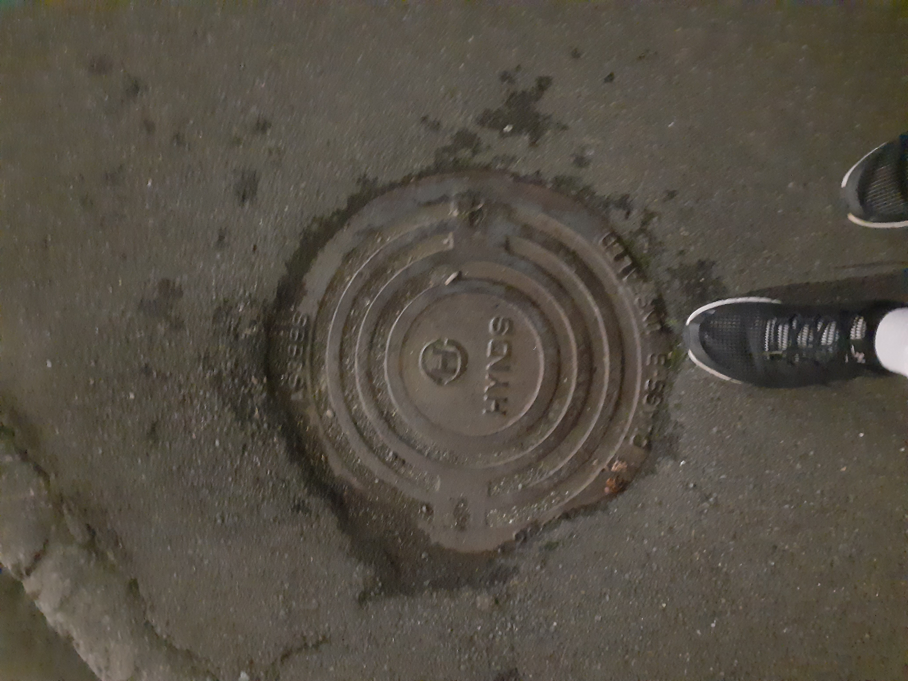
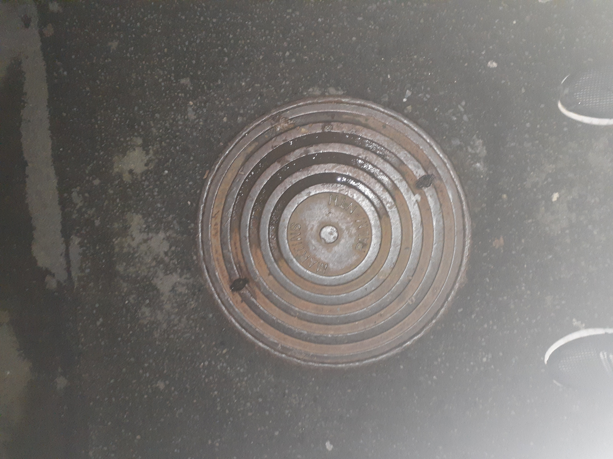
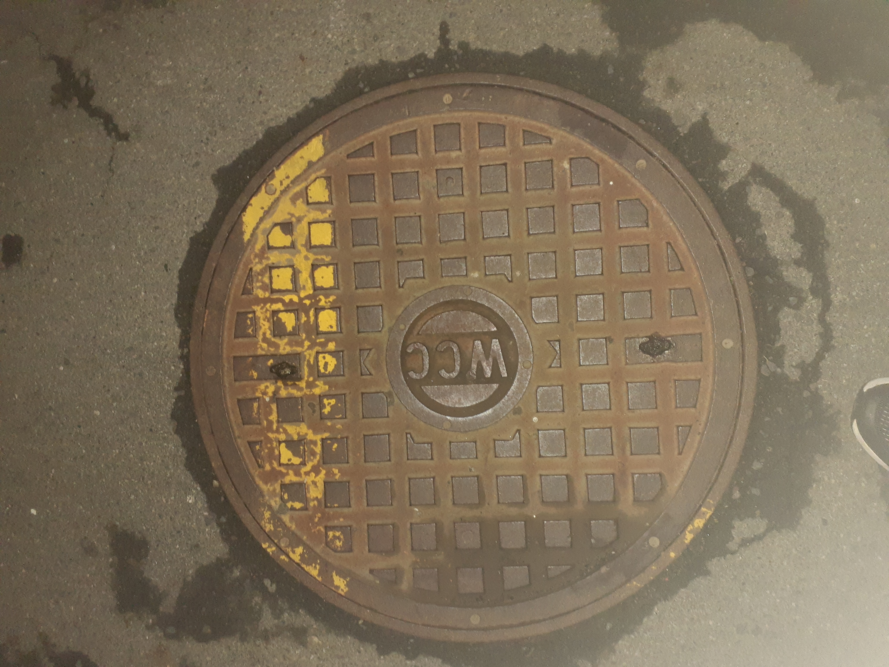
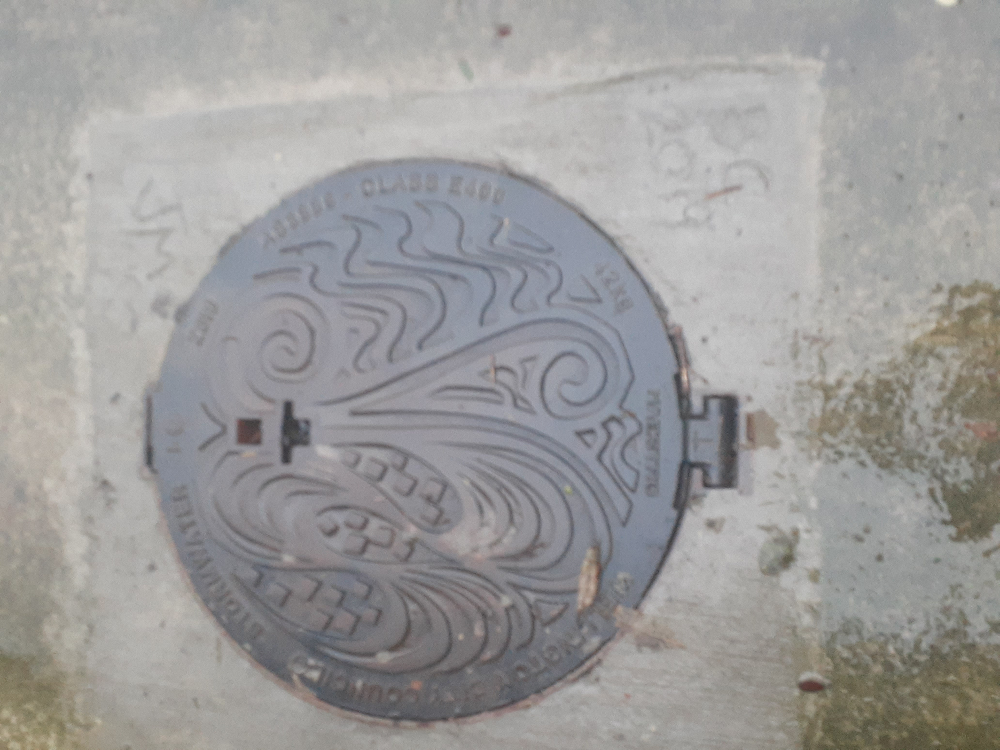
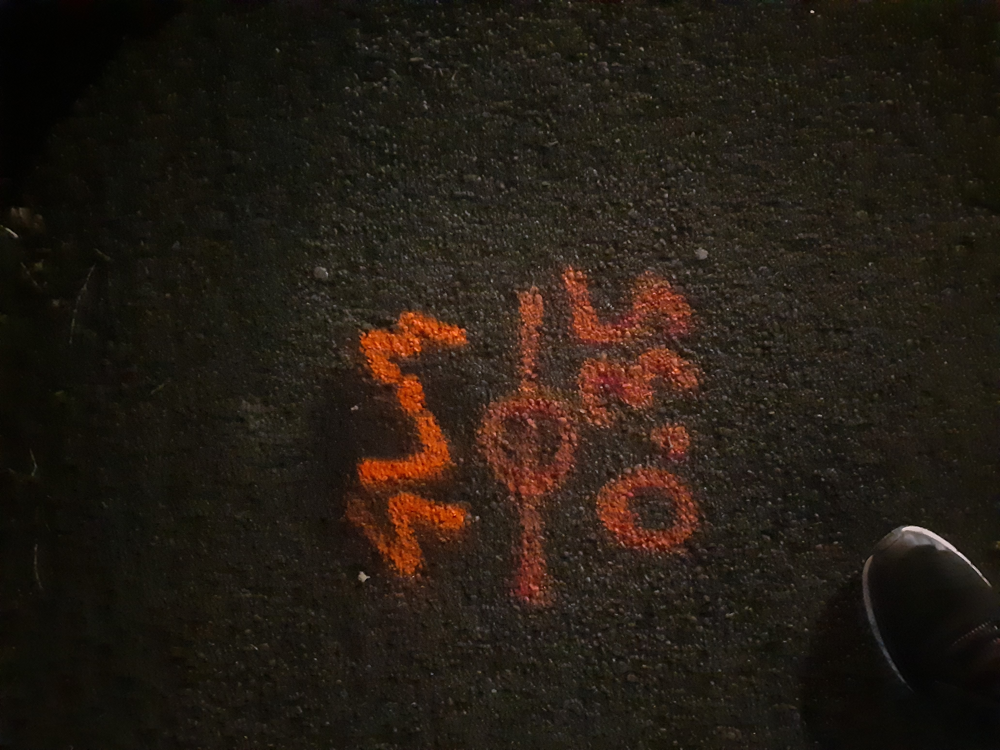
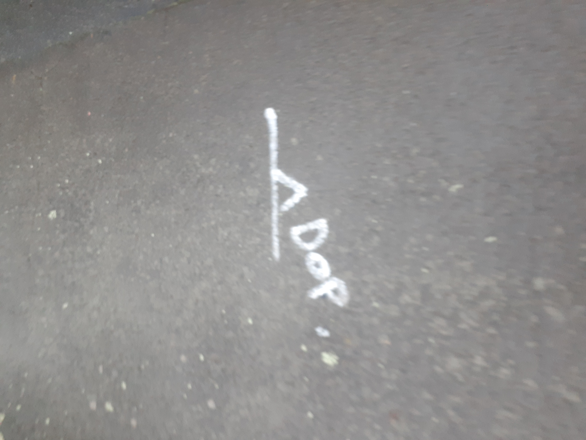
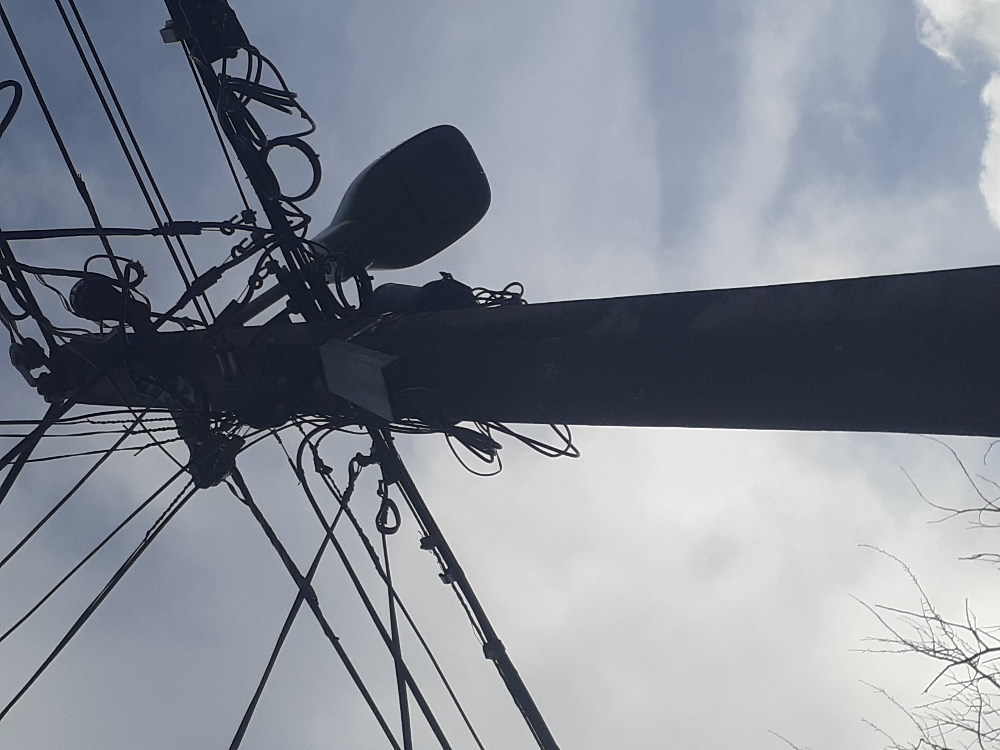
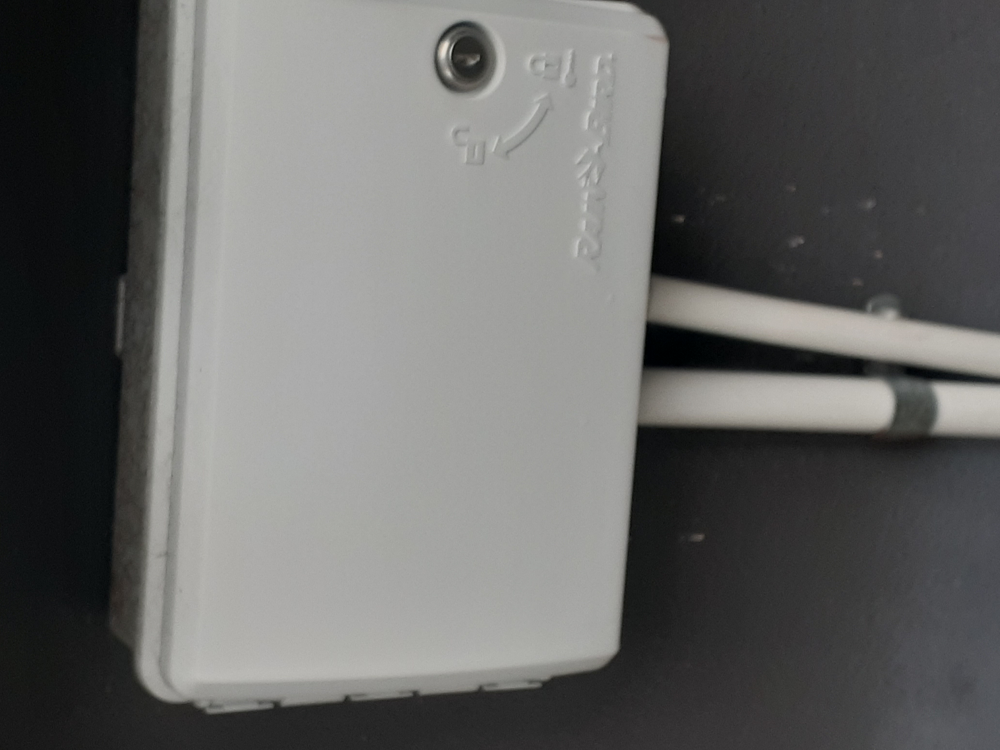
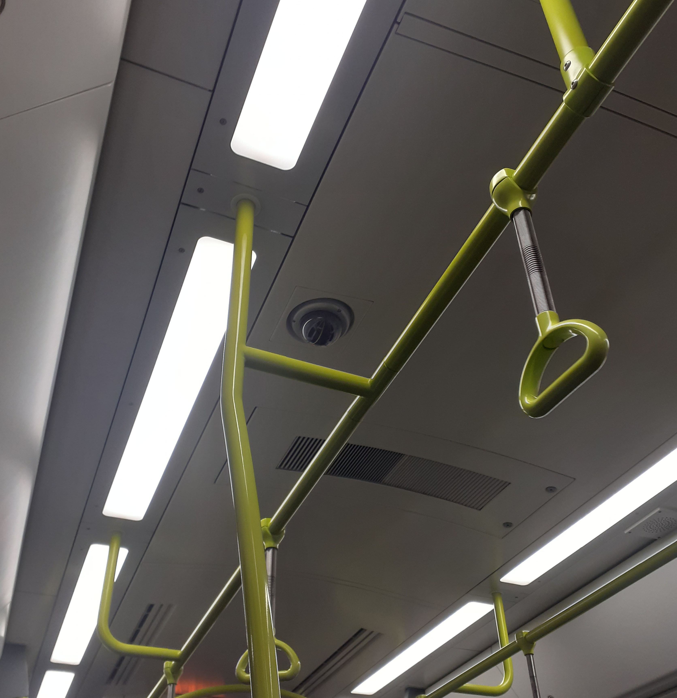
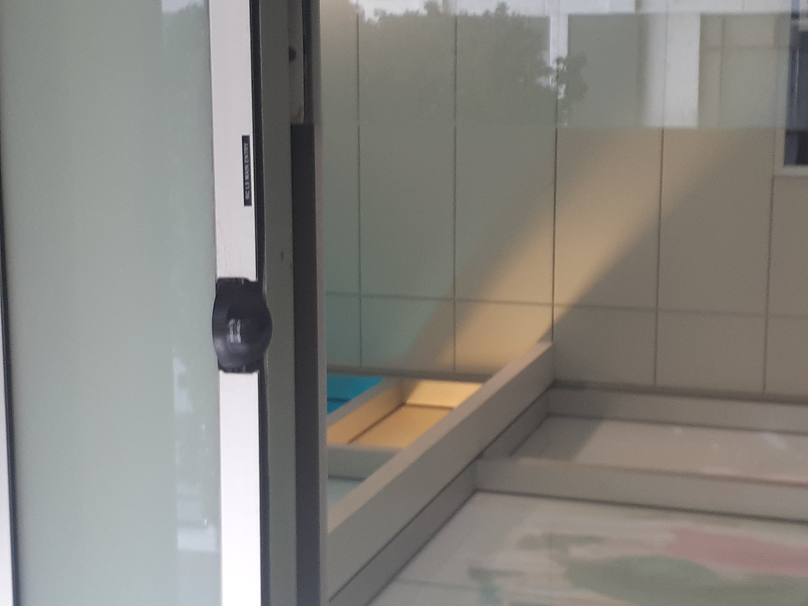

Wellingtons network infrastructure is a lot like the city itself: messy, sprawling, and at times near-incomprehensible. However, the city’s tendency toward flux is a strange blessing for the infrastructure sightseer: markings and remnants of the network are almost everywhere, once you know how to look for them.
The following information is ongoing research. I encourage Readers to get in touch if they want to contribute images and observations to this website.
Content number one: Manhole Covers
Manholes are points in the city that lead to the underground world and the connections that part of the internet connects to.
Content number two: Street Markings
Manhole Covers are generally surrounded with these markings to indicate the kinds of cables that are down that manhole. This is usful for contractors and construction companies when they plan on doing street excavations, utility companies will put these markings down.
Content number three: Antennas
There are many different kinds of ways to connect to the internet, and one such way is through antennas. Unluke manhole covers and markings these don't get worn down and also don't need to be in the middle of the road.
Content number four: Cameras
Cameras aren't specifically public networks and are often not in the publics control to connect to. The city is full of such networked objects, and don't stop at just serveillance of passers by. Many such cameras are used for sensoring vehicular traffic, recording water usage, opening and closing doors ect. This section allows us to look into who controls these ubiquitous networks.
Manhole Covers
These Manholes are very important for electricians and any other profession that deals with internet cables and networks. These will generally be sorrounded by markings, showing were the cables lead or where they come from.

Hynds covers is a specific network of connections that link to other parts of networks and allows for smooth transitions of the internet.
FH is a specific kind of cover that is used by the Hynds company. This cover relates to private networks that run seperate to before mentioned covers and have there own specific way of connecting to networks.

Martins palm nth is a palmerston north engineering company. These manholes were established at the beginning of the 20th century and can be found in the eastern parts of Wellington rather then the CBD area. This is because the company was only hired to do those parts of Wellington, while another did the central areas.

WCC stands for Wellington City Council and what we can gather from this is that these manholes where directly financed by the City Council and also connect to the City Councils networks. These will only be worked on when the the CC needs to upgrade there networks or something is wrong with them.
Humes manhole covers are found everywhere around Wellington because this is a company that just sells manhole covers. The networks that these connect to will be private ones of ones connecting to specific houses.

This is a storm water manhole which has networks that go all over Wellington. These are specifically connected to the internet, but will have elements of the internet to monitor water flow throughout the city.
Street Markings
These are drawn on the ground by utility companies around manholes and underground networks. These are essential for people that work on the cables to understand where these cables will go and what kind of cables they will need to be aware of for health and safty reasons. Many of these markings have specific meanings that will only be known to the company and any professions directally connected to these markings and manholes

SLB 0.35
400v, presumably means voltage of the cables under the ground, a warning to any one working in that area.
[ . ], this is a marking that hows the direction of a cable or power line.
Chor IXD, This has a specific meaning which eletricians will understand.

Dop, this is another marking that electricians will understand
Antennas
Antennas are how radios, street lights, traffic lights and many other electronic devices connect to the internet. These use radio waves to talk to each other and are found all around the Wellington area.

This is a Wireless Router on a telephone pole that connects people to the internet. These can be found all over the city and are essential to connecting people to networks.

Wifi Routers are the things that allow wireless devices, such as phones and portable computers, to the internet and can be found mainly in buildings or around buildings. Universitys have a high concentration of these so that students can always be connected and take there work with them wherever they need.
Cameras
These are used by companies and the government to watch people and make sure they aren't doing anything illegal. Cameras connect to the internet so that they can connect to other devices, such as computers and mobie devices.

Train Servalliance cameras are a essental networks that allow train conducters to always have evidence incase conflict breaks out on the train. These are essential to protecting them from any persons but are managed on a per train basis.

Door Sensor's aren't essentially cameras in the sense that they servey people but are connected to the network and function in ways that are reliant on the network. This is becuae they must still have the ability to sense when a person is approaching it and there by allowing it to send a signal to the automated doors to open when said person reachs a certai distance from the sensor.